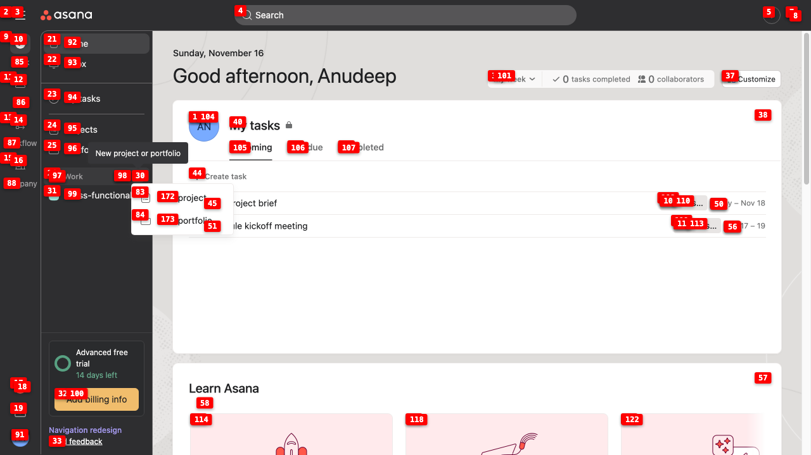
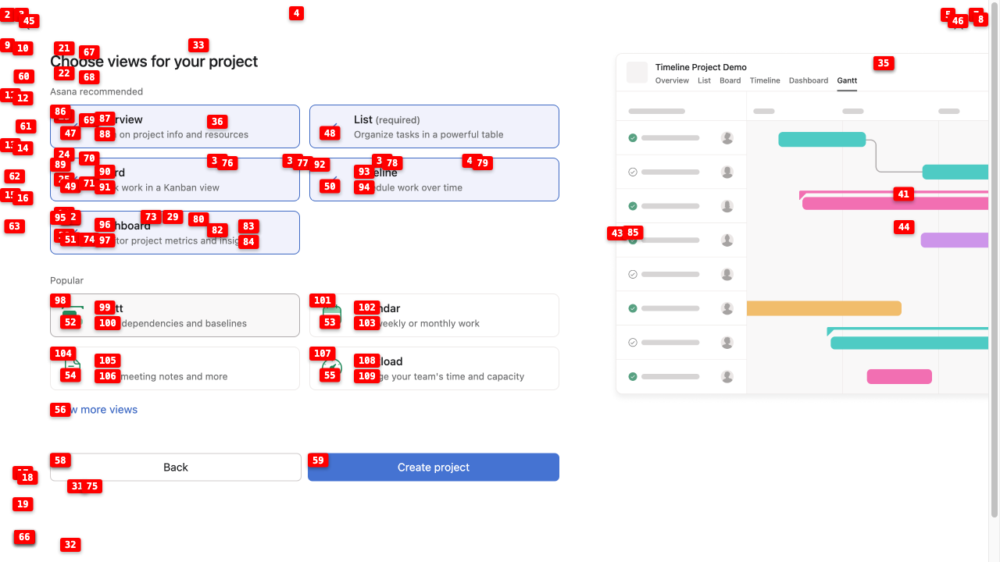
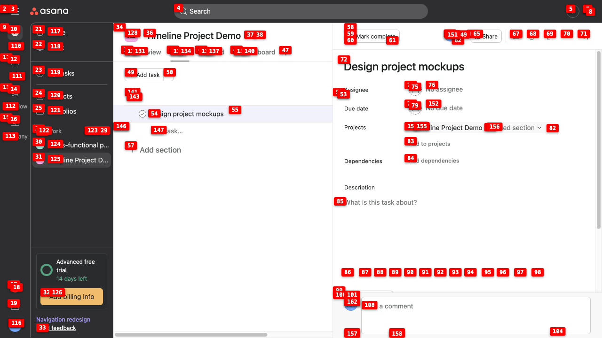

Guide on how to make a project timeline in asana
Total steps: 17
Step 1: Click the 'Create' button in the top navigation to access project creation options

Step 2: Click 'New project or portfolio' to open the project creation dialog where timeline options will be available

Step 3: Click 'New project or portfolio' to open the project creation dialog where timeline options can be configured
Step 4: Navigate to the Projects section in the sidebar to access project creation and timeline options

Step 5: Click the 'Create project' button to open the project creation dialog where timeline options can be configured

Step 6: Click 'Blank project' to start creating a new project that can be configured with timeline view

Step 7: Enter a project name in the required field to begin creating the project

Step 8: Click the 'Continue' button to proceed with creating the project and access timeline configuration options

Step 9: Select the Timeline view option to enable timeline functionality for the project, which allows scheduling and visualizing work over time
Step 10: Click 'Create project' to finalize creating the project with Timeline view enabled, which will provide the timeline functionality for scheduling and visualizing work over time

Step 11: Click 'Add task' to demonstrate how to add work items to the project timeline

Step 12: Enter a task name 'Design project mockups' to add the first task to the timeline

Step 13: Click on the task 'Design project mockups' to open its details and configure timeline properties like start and due dates

Step 14: Click to set the start date for the task, which is essential for timeline scheduling and visualization

Step 15: Click the 'Due date' field to set when this task should be completed, which is essential for timeline visualization and project scheduling
Step 16: Select a due date from the calendar (November 15, 2025) to schedule the task on the timeline